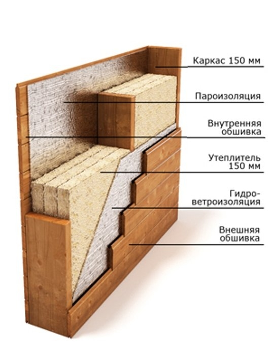

Толщина —
не вся история.
Зазоры в утеплителе и мостики холода влияют на результат. Важны непрерывность утепления и качество монтажа.
За красивым фасадом — целая система.
Разберите её по слоям и узнайте, что сохраняет тепло, защищает от влаги и делает дом вашим.

Выберите часть дома, затем нажмите на слой.
Без сложных чертежей — по порядку.
Показаны учебные примеры, а не утверждённая комплектация вашего дома. Состав, толщины, крепёж и узлы определяются проектом с учётом климата и расчётов. Для пола показан вариант над холодным подпольем, для крыши — утеплённый скат.
Зазоры в утеплителе и мостики холода влияют на результат. Важны непрерывность утепления и качество монтажа.
Со стороны помещения ограничивают поступление пара, снаружи защищают от ветра и осадков. Материалы выбирают для конкретного узла.
Примыкания, вентиляционные зазоры и соединения так же важны, как сами материалы. Просите показать эти узлы в проекте.
Заберите список слоёв с выбранными материалами
и чек-лист для разговора со строителем.
☑ Как устроена стена?
☑ Как защищён утеплитель?
☑ Где проходят коммуникации?
☑ Какие узлы есть в проекте?